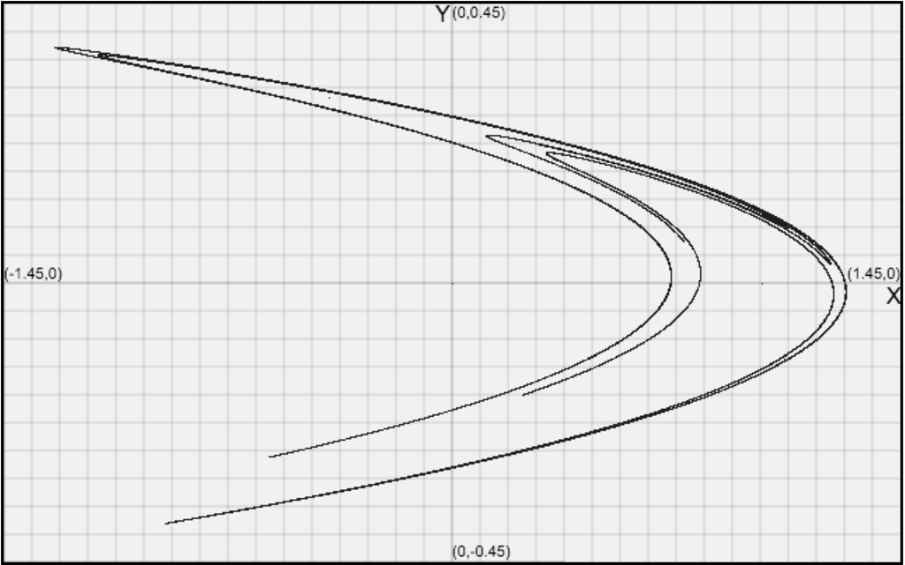
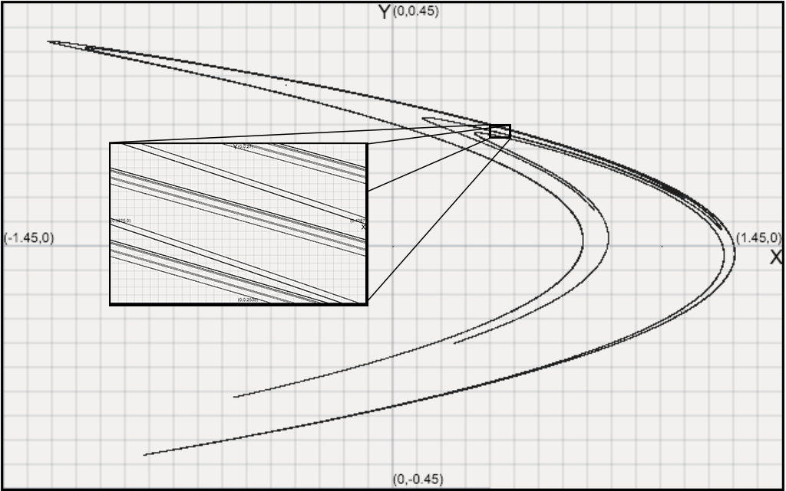
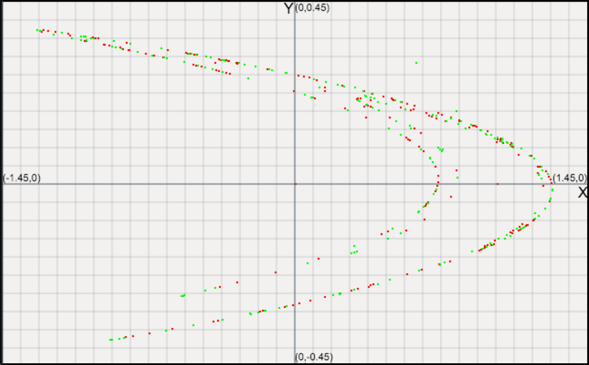
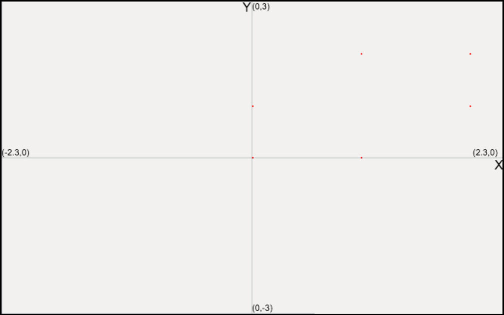
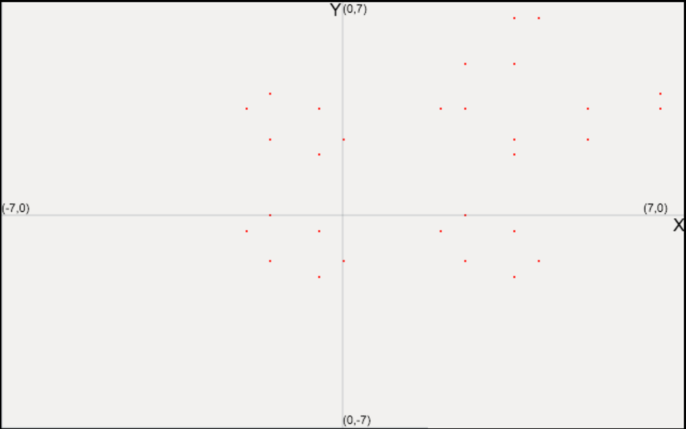
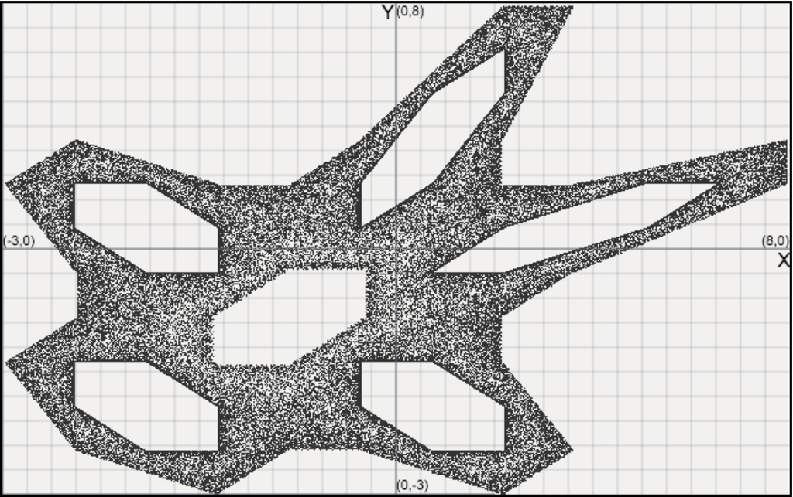

Chaos theory and 2D maps
1. Chaos theory
We have already defined Chaos in the Verhulst section of this paper, but without focusing explicitly on the chaotic properties of the map. In this section we will examine two-dimensional maps and their chaotic properties. In order to examine chaotic properties more efficiently we will need to define some new terms that will allow more for rigour in our text.
Orbit: The set of all successive iterations of an initial value.[1, p.143]
We have referred to orbits implicitly in previous sections as the iterations of an initial value, but no definition was required since, previously, we examined the properties of the maps for a fixed initial value. Now that we know the concept of an orbit we can define a stable fixed point, also defined as an attractor.
Attractor: A set of values towards which the orbits of a system tend to as the number of iterations increases, for a variety of initial values.[1, p.148]
This definition will be useful in the discussion concerning strange attractors.
Chaotic set: All initial values of a discrete dynamical system which produce unstable orbits. An orbit is called unstable when for arbitrary close initial values the successive iterations can differ vastly.[1, p.146]
The chaotic set of a given map is a way of quantifying the chaotic properties of a map, as it describes the set of initial values close to which the function is very sensitive to changes. The final, and most interesting, definition, before moving on to a more concrete examination of specific maps is that of a strange attractor.
() Strange Attractor: An attractor which displays fractal properties. They describe systems which are locally unstable but globally stable. We can also define this as an aperiodic recurrent attractor[2], which in essence means that even though the points do not display any periodicity the overall set displays fractal properties.[3][4]
Non-chaotic strange attractors do exist but are beyond the scope of our research
A few points regarding this definition are worth mentioning:
- The term strange, coined by mathematicians David Ruelle and Floris Takens, is used to emphasize the fact that a solid mathematical explanation for these attractors does not exist.
- The antithetical states of local and global simply means that arbitrarily close initial values end up arbitrarily close together in the attractor, but before that they can end up being arbitrarily far apart.
2. Two-Dimensional Maps
The general formula[3] for a two-dimensional map is:
\begin{equation}
\begin{aligned}
x_{n+1} & = F(x_n, y_n), \\
y_{n+1} & = G(x_n, y_n).
\end{aligned}
\end{equation}
Here the $x_n$ and $y_n$ are independent variables and $F$,$G$ are known continuous functions. It should be quite clear that maps of two (or more) dimensions are more useful in representing natural phenomena than one-dimensional maps, since in nature multiple quantities vary over time. We will examine two such maps, the Hénon map and the Gingerbreadman map. Before moving on, the reader should keep in mind that universal behaviours of such maps are very difficult to find and even more difficult to prove.
The general theory[3] of detecting the fixed orbits in a two-dimensional system is in general an extension of the theory for one-dimensional systems. In a two-dimensional system we need both the $\mathbb{X}$ and the $\mathbb{Y}$ to remain the same for all subsequent iterations so:
\begin{equation}
\mathbb{X}=f(\mathbb{X})
\end{equation}
becomes:
\begin{equation}
\begin{aligned}
\mathbb{X} &=F(\mathbb{X},\mathbb{Y}) \\
\mathbb{Y} &=G(\mathbb{X},\mathbb{Y})
\end{aligned}
\end{equation}
Determining the stability of a point now becomes more complicated, as we need to examine the partial derivatives of each function with respect to each variable:
\begin{equation}
M =
\left(\begin{array}{cc}
\frac{\partial F}{\partial x}&\frac{\partial F}{\partial y}\\
\frac{\partial G}{\partial x}&\frac{\partial F}{\partial y}
\end{array}\right)_{(\mathbb{X},\mathbb{Y})}
\end{equation}
and similarly to what we saw before, with the modulus of the derivative having to be less than 1, we would need that the absolute value of the eigenvalues of this matrix are less 1. It is easy to understand why this condition needs to hold by writing down the Taylor expansion of each of the two functions near $\mathbb{X}$ and $\mathbb{Y}$ and expressing the two in matrix form. As before we will only examine first order convergence, i.e. we will only keep the first firs order terms of the Taylor expansion.
\begin{equation}
\left(\begin{array}{ccc}
x_{n+1}-\mathbb{X}\\
y_{n+1}-\mathbb{Y}\\
\end{array}\right)
\approx
M
\left(\begin{array}{ccc}
x_{n}-\mathbb{X}\\
y_{n}-\mathbb{Y}\\
\end{array}\right)
\end{equation}
If we have that the eigenvalues of the matrix of derivatives are less than 1 then the matrix of equation $(5)$ goes to the zero matrix as the number of iteration increases and thus we get that:
\begin{equation}
\left(\begin{array}{ccc}
x_{n+1}-\mathbb{X}\\
y_{n+1}-\mathbb{Y}\\
\end{array}\right)
\to
\left(\begin{array}{ccc}
0\\
0\\
\end{array}\right)
\end{equation}
i.e. that $x_{n+1}\to\mathbb{X}$ and $y_{n+1}\to\mathbb{Y}$
Examples
1. Additions in the Verhulst map
There was a passing reference to the Feigenbaum Constants in the previous section. Although this concept is unrelated to chaotic maps of higher than one dimension, it is a universal characteristic of one-dimensional maps.[5][6] As it is much harder to find and prove universal characteristics in higher dimensional maps, we thought that it would be of significance to explore in more detail such characteristics in one-dimensional maps.
Universality: The existence of properties that appear in a large class of dynamical systems, independent of each system itself.[7]
In a previous section we defined one-dimensional systems as:
\begin{equation}
x_{n+1} = f(x_n),
\end{equation}
but universal properties render $f$ superfluous.
The two Feigenbaum constants $\delta$ and $\alpha$ are universal constants for functions approaching chaos through continuous bifurcations.
First Feigenbaum Constant ($\delta$): The limit of the length of $r$ intervals between consecutive bifurcations.[8]
This number offers us a geometric understanding of the period doubling in the Logistic map. We can express $\delta$ through the formula:
\begin{equation}
\delta =\lim_{i\to\infty} \frac{\Delta_{i+1}}{\Delta_{i}},
\end{equation}[3]
where $\Delta_i$ is the intervals between the ithand the (i-1)th period-doubling and $\Delta_{i+1}$ the interval between the (i+1)th and the ith period doubling. We can easily show with numerical methods on our map that $\delta$ does indeed tend to the value that Feigenbaum determined[9], i.e.:
\begin{equation}
\delta = 4.6692016091...
\end{equation}
The importance of this value should not be overlooked. Intuitively $\delta$ says that one-dimensional systems such as the ones we have examined all go to chaos at the same rate.
The second Feigenbaum constant $\alpha$ involves the lengths of successive tines in the bifurcation plot\footnote{wolfram} and has been determined[10] to be:
\begin{equation}
\alpha = 2.502907850958...
\end{equation}
The universality of the two constants has been proven and the original proof involved the aid of a computer system.[11]
2. Hénon map
The first two-dimensional map we will examine is the Hénon map, which models the evolution of two variables, $x_n$ and $y_n$ by the following system of equations:
\begin{equation}
\begin{aligned}
x_{n+1} & = 1+y_n+Ax_n^2 \\
y_{n+1} & = Bx_n,
\end{aligned}
\end{equation}
where $A$ and $B$ are fixed parameters. Despite mentioning beforehand that two-dimensional maps can model nature more accurately than their lower dimensional counterparts it should be noted here that the Hénon map has no natural importance. It was formulated by French mathematician and astrologist Michel Hénon in 1976 in order to offer a simplified visualization of the Lorenz System.
Hénon set the values of the parameters to $A = 1.4$ and $B = 0.3$ [12] for which the map displays chaotic properties. It has been determined that for other parameter values the map does not display such properties.[3, p.147] The orbit of the map depends on the initial conditions as for some conditions the map explodes and the orbits tend to $\infty$[3]. However numerical analysis has shown that for all initial points, for which the map does not go to infinity, the obits converge to the same strange attractor. For example with the initial points $(0,0)$ and $(1,0)$ we will end up with the same strange attractor shown in the figure below:

Figure 1. The strange attractor of the Hénon map, with parameters $A = 1.4$ and $B = 0.3$
This derivation is all but rigorous and although the chaotic dynamic of the map has been rigorously proven[13] the actual existence of this strange attractor has never been actually proven.[14] In fact this could be a result of long, attracting cycles. This implies that our numerical analysis should not be considered definitive. The strangeness of this attractor lies in the fact that it is not a simple point or a cycle of points but a fractal-like structure, whose exact properties remain an open problem in mathematics.[1]

Figure 2. The fractal properties of the strange attractor in the Hénon map
If we go back to the definition of a strange attractor we can see that the Hénon map perfectly displays the property of local instability along with global stability. For distinct orbits (whose initial conditions converge) the first few hundred iterations vary vastly, but the overall image of the system is identical.

Figure 3. The first 200 iterations of the Hénon map with initial conditions (1,1) (Green) and (0,0) (Red)
Shifting our focus from the strange attractor to the bifurcation properties of the map we can examine the Hénon map with the already established theory in mind (from [3] and [14]) to get that first of all the fixed points are:
\begin{equation}
\begin{aligned}
\mathbb{X}_\pm &=\frac{-(1-B)\pm \sqrt{(1-B)^2+4A}}{2A} \text{, and} \\
\mathbb{Y}_\pm &= B\mathbb{X}_\pm
\end{aligned}
\end{equation}
Using the formula in $(5)$ we can determine that for $A<\frac{3}{4}(1-B)^2$ one of the two points is stable and the other is unstable, but when $A>\frac{3}{4}(1-B)^2$ both the points are unstable. Similar to a one-dimensional map we once again have a bifurcation which leads to a two cycle, and we need to consider a fairly complicated formula to determine the new points. Namely:
\begin{equation}
\begin{aligned}
\mathbb{X} &=F[F(\mathbb{X},\mathbb{Y}),G(\mathbb{X},\mathbb{Y})] \\
\mathbb{Y} &=G[F(\mathbb{X},\mathbb{Y}),G(\mathbb{X},\mathbb{Y})]
\end{aligned}
\end{equation}
We will not offer any further analytical examination of this map, but we will end this section with the obvious observation that if we set $B = 0$ in $(11)$ we get the logistic map which through a change of variables can be transformed to the Verhulst map we have already examined.[3]
3. Gingerbreadman map
Finally we will examine the Gingerbreadman map, which is given by the equations:
\begin{equation}
\begin{aligned}
x_{n+1} &= 1 - y_n + |x_n|\\
y_{n+1} &= x_n
\end{aligned}
\end{equation}
One can easily observe that the point $(1,1)$ is a fixed point and it has been determined analytically that all points within the hexagonal region $(0,0), (1,0), (2,1), (1,2), (0,1), (2,2)$ are periodic with period [1]. This means that for these initial values the Gingerbreadman plot is a single (stable) point and a hexagon with vertices within the aforementioned region, respectively.

Figure 4. The 6-cycle periodic attractor of the Gingerbreadman map, with initial value (1,2)
As we move outside this region the behaviour of the map becomes chaotic.
By trying to find a qualitative relation between the initial condition and the orbits of the map we found that for initial values $(-0.5, -0.5)$ the points of the map orbit between 5 separate hexagons in a 30-Cycle, which one can visualize as the limbs and the head of the Gingerbread man.

Figure 6. The Gingerbreadman map with initial condition (-0.5,-0.5)
As we approach these values from either side we can see that the spread of the points gravitates towards the attracting hexagons. However one more hexagon is visible - the body of the gingerbread man, or the centre hexagon.

Figure 7. The Gingerbreadman map with initial condition (-0.5,-0.49)
Applications
Pseudo-random number generator
Regarding the real-word applications of dynamical systems, it is remarkable how we can take advantage of their chaotic behaviour in the process of generating random numbers. Following with the focus in two-dimensional maps in this section, we'll go through a chaotic pseudo-random number generator (cPRNG) based on the Tinkerbell map which will serve as an example.
The Tinkerbell map[15] is defined as follows:
\begin{equation}
\begin{split}
x_{n+1} &= x_{n}^2 - y_{n}^2 + ax_{n} + by_{n} \\
y_{n+1} &= 2x_{n}y_{n} + cx_{n} + dy_{n},
\end{split}
\end{equation}
where $a=0.9$, $b=-0.6013$, $c=2.0$ and $d=0.5$ are commonly used values and will be the values considered in the development and testing of the algorithm.
1. The algorithm
Based on [16] and [17], consider two independent Tinkerbell maps:
\begin{equation}
\begin{split}
x_{n+1} &= x_{n}^2 - y_{n}^2 + ax_{n} + by_{n} \\
y_{n+1} &= 2x_{n}y_{n} + cx_{n} + dy_{n}\\
\hat{x}_{m+1} &= \hat{x}_{m}^2 - y_{m}^2 + a\hat{x}_{m} + b\hat{y}_{m} \\
\hat{y}_{m+1} &= 2\hat{x}_{m}\hat{y}_{m} + c\hat{x}_{m} + d\hat{y}_{m},
\end{split}
\end{equation}
in which $x_{0}$, $y_{0}$, $\hat{x}_{0}$ and $\hat{y}_{0}$ are determined and used as our generation key. We'll consider a precision of 9 decimal places for these values. The key also includes two different integers $N$ and $M$ which represent the number of initial iterations through each map.
At this point we proceed in the following way:
- Iterate $N$ times the first Tinkerbell map from Eqs. (3).
- Iterate $M$ times the second Tinkerbell map from Eqs. (3).
- We continue with the iterations generating two bits $b_{i}$ and $b_{j}$ given by:
\begin{align*}
b_{i} &= |\lfloor y_{n} \times 10^9 \rfloor \mod 2|\\
b_{j} &= |\lfloor \hat{y}_{n} \times 10^9 \rfloor \mod 2|,
\end{align*}
and ultimately outputing them. It should be mentioned that there are variations of this algorithm such as performing a XOR operation to these bits but won't be considered for this example.
- Return to step 3 until a bit stream of the required size is generated.
Key space: The set of all possible keys that can be used as initial seed in a pseudo-random generator.
It can be inferred from the 6 different keys used that this pseudo-random scheme will have a relatively large key space which the authors B. Stoyanov and K. Kordov estimate at $2^{138}$. However, due to the nature of our research, we'll focus on the key sensitivity i.e., how small changes in the initial values cause a big variations in the final result.
In order to illustrate that, we have created a Python script that simulates the generation of 16-bit strings with the arbitrarily chosen initial values $x = -0.145622309$, $y = -0.742799703$, $\hat{x} = -0.634155080$ and $\hat{y} = -0.332344590$. The initial iterations are set at $M = 730$ and $N = 830$. Then:
\begin{array}{ |c|c|c| }
\hline
Variation & Result & Change \%\\
\hline
None & 0111100010010100 & 0\% \\
x, \hat{x} \mathrel{+}= 10^{-9} & 1001010011000010 & 37.50\%\\
y, \hat{y} \mathrel{+}= 10^{-9} & 0010011111111110 & 56.25\%\\
x, y \mathrel{+}= 10^{-9} & 1101101010010110 & 43.75\%\\
\hat{x}, \hat{y} \mathrel{+}= 10^{-9} & 0111100010000101 & 12.50\%\\
\hline
\end{array}
These results exhibit the sensitivity to initial conditions that chaotic systems and shows why due to their unpredictable behaviour, they can have an application in the field of cryptography.
Communication Using Chaos Encryption
Edward Lorenz proposed the now famous system of three coupled differential equations:[19][20]
\begin{equation}
\begin{aligned}
\frac{dx}{dt} &= \sigma(y-x)\\
\frac{dy}{dt} &= x(\rho-z)-y\\
\frac{dz}{dt} &=xy - \beta z\\
\end{aligned}
\end{equation}
In 1963, as a simplified model of heat transfer in a slab of fluid[3]. We will not offer a more thourough analysis of this system, as our focus lies mainy in discrete systems but the significance of this system in chaos theory should not be overlooked. It was through this system and the variations in its initial conditions that Lorenz first discovered what we now know as chaos theory. The system displays both an initial value sensitivity and a chaotic attractor (the phase portrait of the trajectories resembles a butterfly in $x,y,z$).
The Hénon map which we have already examined is a simplification of the Poincaré section of the Lorenz system and Hénon developed his map as a way of more easily visualizing the Lorenz System.[21] This explains why the two systems are so closely related and why they both display strange attractor properties for specific initial values.
A modern approach of applying Chaos Theory to the field of cryptography, was discovered in the early 1990[18] . Louis Pecora and Thomas Carrol described the Synchronization Properties. The very idea of two chaotic systems being synchronized was doubted for a long time as the main argument was that the key property of a chaotic system is that it is highly dependent on the initial conditions.
Chaotic encryption is an example of symmetric encryption[23] with a system involving a sender,receiver and a key shared by both parties. Lorenz's equations serve as the chaotic system for this method[24] , with the key as the three constants $\beta,\rho,\sigma$. The Senders Lorenz system, A, iterates with time as usual. The Receiver's Lorenz System, B, is slightly different and is governed by following equations:
\begin{equation}
\begin{aligned}
\frac{dX_A}{dt} &= \sigma(Y_A-X_A)\\
\frac{dY_A}{dt} &= X_A(\rho-Z_A)-Y_A\\
\frac{dY_A}{dt} &=X_AY_A - \beta Z_A\\
\end{aligned}
\end{equation}
Notice that instead of B using its own $X_B$, it uses the $X$ value of A, $X_A$. Surprisingly this input alone causes them to be synchronised, despite differing initial conditions.
Once systems are synchronised we can begin to send our message, $M$. Now, instead of using $X_A$ as an input for B, we send $S=M+X_A$, keeping $M$ relatively small compared to $X_A$. Now $M$ is masked by the chaotic variable $X_A$. Anyone intercepting the message would be unable to extract the original message $M$. Despite the random input of $M$ to B, synchronisation is preserved. After B has iterated with $S$ as $X_A$, the original message can be founded by subtracting the new value of $X_B$ which is equal to the value if $X_A$ after a single iteration from $S$, as seen below:
\begin{equation}
\begin{aligned}
S = X_A + M\text{ and }
\lim_{t\to\infty} X_B &= X_A
\text{ give } \\
M = X_B - S,
\end{aligned}
\end{equation}
where the time $t$ is directly proportional the number of iterations. Thus, the chaotic element of $S$, namely $X_t$ is removed to reveal the original message.
We implemented this by encrypting images using the Lorenz attractor with values:
\begin{equation}
\begin{aligned}
\sigma &= 10 \\
\rho &= 28 \\
\beta &= \frac{8}{3}\\
\end{aligned}
\end{equation}
This applet LINK allows the user to choose the number of iterations used to synchronise A and B before transmission begins. Observe that if they are not allowed to synchronise for long enough, the message is lost in transmission and the recovered image is incomplete.
Since (18) cannot be analytically solved, the applet uses Euler's method extended to 3D[25][18].
This applet aims not to provide a practical chaotic encrypter, but merely to display the effects of chaos in encryption.